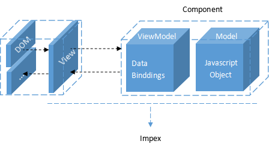

impex ( / 'impex / )是一个基于数据驱动的组件式开发引擎，用于开发web应用。impex.js 可以运行在桌面或移动端让你的web程序更好维护，更好开发。
类似JQuery，impex.js 并不包含UI(已有扩展UI库)，但是他提供了一种让开发者能够更高效构建UI的能力。这种能力可以解决你使用传统方式(比如JQuery)构建webUI时遇见的问题
impex.js 为开发者提供了DOM free的能力。只要掌握js基本语法，就可以构建UI，无需再关心各种DOM问题，更加专注业务本身。
组件系统是 impex.js 的核心，有了组件系统才有构建web(大型)应用的基础。
几乎所有的web开发都大量使用了各种不同的组件，包括浏览器内置的(video/audio/colorpicker...)或者第三方开发的(日历/Dialog...)，组件具有独立的作用域和控制方法，以及视图。可以在适合的场景重复使用， 让开发变的简单、高效。
那么，还需要什么？ 当你使用了类似bootstrap之类的库时，一个modal组件就会导致你的页面上产生几十行的HTML代码，而仅仅是描述了一个弹窗，如果是10个或者100个又会如何，impex.js 为你提供了另一个选择。
<x-nav type="guide">
<x-side-nav cate="guide"></x-side-nav>
</x-nav>impex.js 提供让开发者定义web组件的能力，就像video标签样，看上去只有一行代码，而在运行时自动解析标签实现组件功能。组件可以嵌套组件，组合出强大的功能。一个典型的impex.js 应用就是一个组件树，所有UI都是组件，面板、列表、表单等等。
数据绑定是 impex.js 的基础，是 impex.js 提供给开发者的另一个强大能力。是实现DOM free的基础。 impex.js 基于数据驱动的设计方案，会监控任何你想监控的变量，并且当变量修改时，自动刷新视图。而这正是web交互的基础。

impex.js 是一个MVVM结构的实现方案，该方案隔离了视图与数据，让这两部分变成0耦合的独立结构，当你修改了模型数据(不是DOM数据)时, impex.js 就会自动刷新视图，开发者不必关心细节。这样你的模型可以变成“纯净”的js对象，并可以相当容易的进行单元测试。下面是一个简单例子
<!-- 视图 -->
<div id="entry">
Hello {{ name }} !
</div>
// 组件
var debug = impex.render(document.getElementById('entry'),{
name:'impex'
});
上面的语法看起来像是一个模板库？的确，但 impex.js 做的远不止渲染一个模版而已。impex.js 使用数据驱动更新视图后，就会对表达式进行自动分析并跟踪，impex.js 会知道哪些是变量，哪些是常量，并且在变量变动时持续驱动视图更新。
现在，可以打开控制台并修改debug.name的值，来观察数据驱动的效果。
重要的是，数据驱动的过程中，你不会也不应该看到任何DOM！
希望以上内容对你有所帮助，如果发现错误或者想参与编辑，可以在 Github 上 fork 此站点